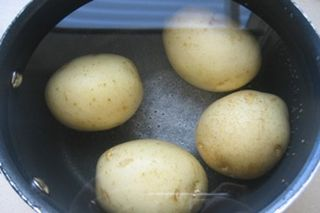
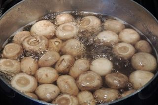
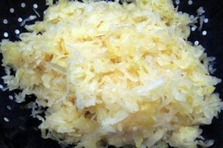
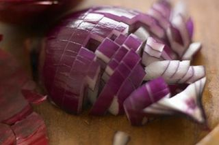
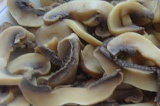
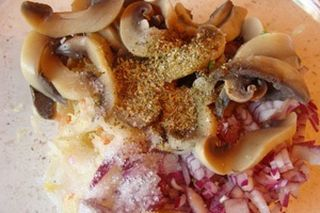
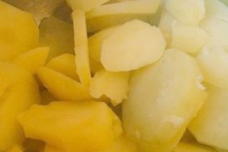
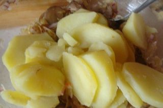

Шаг 1: подготавливаем картофель.

Промываем картофель под холодной проточной водой при помощи кухонной щетки. Кожицу не снимаем! Кладем клубни овоща в глубокую кастрюлю и заливаем водой так, чтобы она была выше их уровня на 5 – 7 сантиметров.
Затем включаем плиту на средний огонь, ставим на нее кастрюлю с картофелем и варим его в течение 20 – 25 минут. По истечении нужного времени проверяем готовность картофеля вилкой. По очереди вводим вилку в каждый клубень, если она входит без напора - картофель готов. Перекладываем его в глубокую тарелку и остужаем до комнатной температуры.
Шаг 2: подготавливаем грибы.

Одновременно с картофелем подготавливаем грибочки. Срезаем с каждого шампиньона корень. Промываем грибы под холодной проточной водой. Перекладываем в глубокую кастрюлю и заливаем горячей водой из разогретого чайника.
Включаем еще одну конфорку на плите на средний уровень. Ставим на нее кастрюлю с грибами и добавляем в эту емкость концентрированный лимонный сок. После повторного закипания воды, варим шампиньоны 15 – 20 минут до полной готовности. Затем при помощи шумовки перекладываем их в глубокую тарелку и остужаем до комнатной температуры.
Шаг 3: подготавливаем капусту, репчатый лук и зелень.

Пока варятся картофель и грибы, подготавливаем остальные овощи. Кладем квашеную капусту в дуршлаг, отжимаем руками от излишков сока, перекладываем на разделочную доску, шинкуем и отправляем капустную нарезку в глубокую миску.

Чистим красный репчатый лук от шелухи, с перьев зеленого лука срезаем корни, а с зелени удаляем утолщенные стебли. Промываем лук и зелень под холодной проточной водой и сушим бумажными кухонными полотенцами. По очереди укладываем овощи на разделочную доску и нарезаем. Репчатый лук режем кольцами, полукольцами или кубиками толщиной до 5 – 7 миллиметров и кладем в миску с квашеной капустой. Зелень просто мелко рубим и перекладываем в отдельную тарелку.
Шаг 4: доводим салат до полной готовности.

Теперь пришло время остывших грибов и картофеля. Шампиньоны слегка отжимаем, кладем на разделочную доску и нарезаем пластами толщиной до 5 миллиметров.

Перекладываем их в миску с капустой и репчатым луком.

С картофеля снимаем кожицу, кладем его на разделочную доску, нарезаем кольцами, полукольцами или кубиками толщиной до 1 сантиметра.

Добавляем нарезку в миску к остальным овощам. Туда же всыпаем сахар, по вкусу соль, черный молотый перец и вливаем растительное масло.
Перемешиваем все составляющие салата столовой ложкой до однородности, перекладываем блюдо в глубокую салатницу, посыпаем измельченной зеленью и подаем.